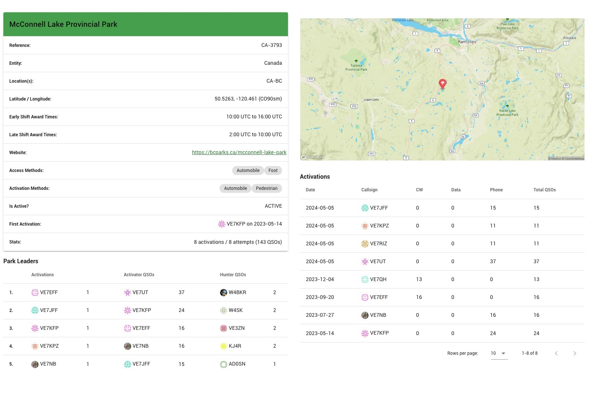
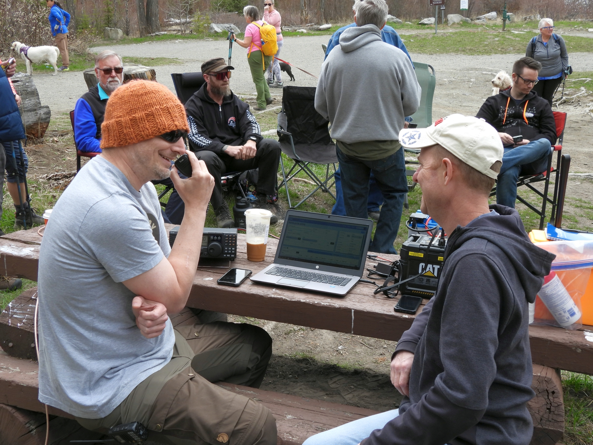

Spring Picnic and inaugural KARC POTA Activation -- It's a wrap people!
Back to StoriesStory 795
Thu, 2024-05-23 20:31 — VE7FSR

The KARC held our first official POTA activation and spring picnic at McConnell Lake Provincial Park on May 5, 2024.
We had an amazing turnout which included: Bob VA7BKN, Doug VA7GPX, Dave VE7LTW, Solomon VA7NIN, Iain VE7IET, Dwight VE7BV, Brock VA7AV, Tom VA7TWL and his XYL Gabriele, Jim VE7HS, Kyle (no call sign), Shane VE7JFF, Simon VE7RIZ and his son Bryson, Ian VE7HHS, and Mike VE7KPZ and his XYL Jane VE7WWJ came all the way from Vernon.
Shane VE7JFF helped organize, and he, Simon and Mike all brought radios and antenna setups ideal for a POTA activation.

Things got off to a brisk start once VE7UT was spotted, and the operators made a total of 37 contacts before we were rained out.
Operators VE7JFF, VE7RIZ and VE7KPZ made 4 contacts on 2M, 28 contacts on 20M, and 5 contacts on 40M.
We were very fortunate that Ian VE7HHS came up from Abbotsford, because he shot video and livestreamed the event.
See: https://youtube.com/live/zD5Nhmd8zRg?feature=share Please check out all the photos in the album here .